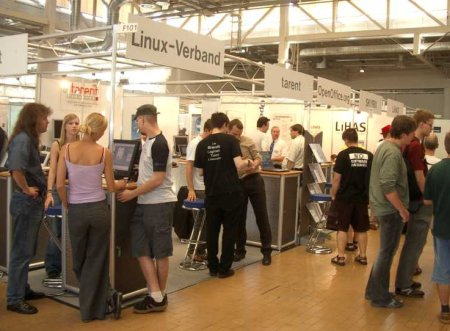

Linuxtag 2004 OpenOffice.org war 2004 auf dem Linuxtag in Karlsruhe als Gast auf dem Gemeinschaftsstand des LIVE Linuxverbandes vertreten. Vom 23. - 26.06.04 konnten sich Anwender, Dienstleister und Interessierte mit den Mitgliedern des deutschsprachigen Projektes austauschen und sich über die freie Office Suite ausgiebig informieren. Der Schwerpunkt lag in diesem Jahr auf Bildungsthemen, wie Unterrichtsmaterialien (siehe auch Comenius Schulprojekt) und dem schulischen Einsatz von OpenOffice.org. Besonderer Dank gilt hier Manfred Reiter und seinen Schülern, die OpenOffice.org im praktischen Einsatz demonstrierten. Neben den klassischen Fragen rund um das Thema Datenbanken oder zum Datenaustausch suchten einige Besucher den OpenOffice.org Stand gezielt mit konkreten Anwendungsfragen auf und brachten nicht selten die betreffenden Dokumente gleich auf dem eigenen Laptop mit. Wie bereits auf der CeBIT war die PrOOo-Box auch auf dem LinuxTag ein voller Erfolg. Einige Besucher informierten sich gezielt über verfügbare Literatur zu OpenOffice.org und nutzten die Gelegenheit, mit Thomas Krumbein über sein Buch "OpenOffice.org Einstieg und Umstieg" zu sprechen. Im Kongressbereich standen zwei interessante Vorträge zu OpenOffice.org auf dem Programm. Hier konnten sich die Kongress-Teilnehmer über "Reduzierte Kosten bei der Migration zu Open Source Office-Produkten basierend auf OpenOffice.org" informieren, sowie den Vortrag "Hacking OpenOffice.org" in englischer Sprache verfolgen. Im freien Vortragsprogramm stellte Thomas Keup in seinem Beitrag "Die 7 Ws von OpenOffice.org 1.1.1 - Der Open Source-Office Suite" die wesentlichen Features von OpenOffice.org vor und bot den zahlreichen Zuschauern die Möglichkeit, konkrete Fragen zu der Office-Suite zu stellen.
Auf dem Messestand und auch während des Vortrags "OpenOffice.org 2.0: Ausblick und Einblick" von Stefan Koehler und Jacqueline Rahemipour konnte man sich ein erstes Bild von den geplanten Neuerungen machen. Weitere Bilder von OpenOffice.org auf dem Linuxtag 2004 finden Sie hier. Die Hardware-Ausstattung wurde dem Projekt für die Veranstaltung von der Firma "natural computing GmbH" zur Verfügung gestellt. Eine genaue Übersicht zu den an dem Linuxtag 2004 beteiligten Projektmitgliedern, den Vorträgen und den übernommenen Aufgaben findet sich auf dieser Seite. |
|